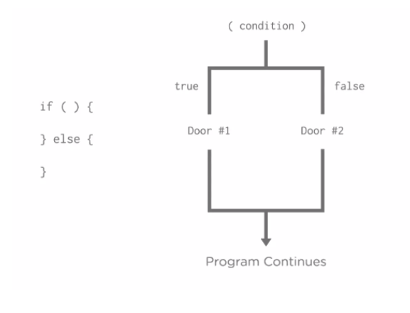
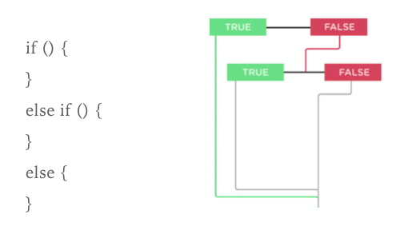

Introduction to JavaScript
JS Introduction
JavaScript is a programming language that drives the web: from front-end user interface design, to backend server-side programming, you'll find JavaScript at every stage of a web site and web application.
It is used on nearly every web site in the world.
JavaScript drives the front end of giant web applications like Google Maps, Gmail, and Facebook.
What can JS do?
- Image switchers and lightboxes
- Full featured web applications
- Keep track of users with cookies
- Interactive elements like tabs, sliders and accordions
- Drawing and animation

Full-Stack JS
JavaScript isn't just limited to the web browser. It turns out that JavaScript can even be used on web servers.
Node.JS is a popular choice for server side development. It's a favorite of big companies like Wal-Mart, PayPal, LinkedIn, Netflix and Groupon.
Reminder! (on syntax)
JavaScript is a programming language and, like any language, it has its own vocabulary and grammar.
Programmers call this syntax.
A programming language's syntax is the different commands, special words and punctuation you use to put together a program.
Every programming language has its own syntax, just as English, Spanish and Mandarin each have their own vocabulary and grammar.
REMINDER! (ON JAVA)
Remember! ‘Java’ is not the same thing as ‘Javascript’. They are two different languages. We will be learning Javascript.
Quick Review 1
You can use JavaScript on a server?
- True
- False
Quick Review 2
JavaScript lets you add interactive components to a site like photo galleries, tabbed panels, or form validation.
- True
- False
Quick Review 3
JavaScript is used to build complex web applications, like GMail, Google Docs, and Google Maps.
- True
- False
Quick Review 4
Javascript and Java are the same programming language.
- True
- False
Quick Review 5
What does "syntax" mean?
- Syntax is another programming languages that is becoming as popular as JavaScript.
- Syntax is the vocabulary and grammar of a programming language. It’s a language’s words and commands as well as instructions for putting them together to create a program.
- Syntax is a command in the JavaScript programming language.
Quick Review 6
What do JavaScript, HTML, and CSS have in common?
Statements
Each instruction in JS is a "statement", like:
console.log('Hello World!');

Each separate instruction in Javascript is called a 'statement'. A 'simple' statement represents a single instruction and ends with a semi-colon. You can think of a simple statement like a sentence - the semi-colon is like a full stop and tells Javascript that your statement is finished.
Javascript Console
This is located in the Developer Tools on Chrome.
You can find errors in your JavaScript, find out what type of error it is, and determine which line of code the error is on.
All browsers have a JavaScript interpreter.
One of the main ways to keep track of things happening in our programs is to use the following JavaScript statement
console.log();
Checking out the console in developer tools
You can do basic math and other functions in the console.
For instance, type 2+2 and hit enter, the console should show you the number 4.
Try it!
A console is where you will check to make sure that your program is running the way you want it to.
JS Statements
Let’s practice writing a command in JavaScript
Open JSBin, and in the Javascript section, write
alert();
Alert is a command that's built into the browser. It opens a dialogue box and displays a message.
What we type in our code is called a JavaScript statement. You write programs by typing multiple statements. Just like you write a paragraph, by writing multiple sentences.
Things to Remember
- A program is a set of statements that run one after the other.
- One statement needs to be complete before the next statement runs.
Variables
Use variables to store values.
Declare, then initialize in 2 statements:
var x;
x = 5;
console.log(x);
Or declare and initialize in one statement:
var x;
x = 5;
var y = 2;
console.log(y);
Re-assign the value later:
var x = 5;
x = 1;
Variables
Variables are one of the basic building blocks of Javascript. Just like 'x' in algebra, a variable in programming is a named container for a value that can change.
Variables have to be 'declared' once before being used, using the 'var' keyword and the name of the variable. A variable declaration is a simple statement, so it ends with a semi-colon.
Assigning an initial value to a variable is called 'initialising'. You can declare and initialise in one go, or seperately.If its not assigned, it's undefined.
Important Note!
Variable names can’t have spaces if they have multiple words in them. If they do have multiple word, you should use camel case.
Camel case means that if you have two words, the first word does not have a capital letter but the subsequent words do).
- Example: myNumber
- Example: thisIsMyCoolVariableName
- Example: favoriteFood
More on Variable Names
- Begin with letters, $ or _
- Only contain letters, numbers, $ and _
- Case sensitive
- Always a space after 'var'
- Avoid reserved words
- Choose clarity and meaning
OK:
var numPeople, $mainHeader, _num, _Num;
var 2coolForSchool, soHappy!
Alert Command Using Variables
var message = "Hello!";
alert(message);
message = "Hello! My name is Laura!";
alert(message);
Where does my JavaScript go?
When you are working in a browser (not a server), it is similar to CSS!
You can link a JavaScript file to a web page using the script tag and the src property (this goes in your HTML document, head or body):
<script src="scripts.js"></script>
Where does my JavaScript go?
Or you can insert JavaScript directly into a web page inside script tags in the head section of your HTML:
<script>
alert("Hello there.");
</script>
You can also add it right before the closing body tag. Any idea why?
Data Types in JS
Variables can be populated with any one of the 'data types' available in Javascript.
- strings
- numbers
- booleans
- arrays
- objects
There are also data types that cater for situations where there is no value undefined and null. Loose typing- you don't tell JS what type of data type it is, it guesses. You can use typeof to see what it thinks.
Data Type 1: Strings
A string is something that would be in quotes. A string is how you would represent text, like “Beyonce”. Strings ALWAYS need to be surrounded by quotes.
In your JS bin, enter
console.log("Beyonce");
This will have your string logged into the console so that you can see it. Try it!
With JS, semicolons are an important part of the language’s syntax. Just like < > are important for HTML. You should have a semicolon at the end of each statement (or the end of each line) in most of your JS.
Data Type 1: Strings
Say you want to save your name (and remember, your name is a string) because we want to use it in the program you are writing.
You can use the keyword var like this
var name = "Laura";
‘name’ will become a keyword in a program, and “Laura” is the value assigned to it.
Expressions
Variables can also store the result of any "expression":
var name = 'Gaga';
var title = 'Lady';
var greeting = 'Hello ' + title;
var formalGreeting = greeting + ', ' + name;
A new command
If you want to ask your user a question in a pop up window, you can use the prompt command. It is similar to alert.
You use prompt and then generally follow that with a string.
prompt("What is your favorite food?");
Try making several prompts in JSBin
Prompt command
What is a way that we have learned to store the information for what the user types in?
var name = prompt("What is your name?");
console.log(name);
Another new command
document.write();
This adds text directly to your browser (NOT the console).
So, if you want to ask someone their name and then add it to your website, you can!
Combining Strings
We added someone’s name to our website. What if we want to add other text to their name?
We need to add the string (generally with a space) and the + sign
var name = prompt("What is your name?");
document.write("Hello " + name);
The process of combining strings is called Concatenation. In JS, you combine strings with a + operator like this: 'one string ' + ' another string'
Make a Madlib
A madlib is a word game where one player prompts others for a list of words to substitute for blanks in a story, before reading the story aloud.
Let’s create a madlib game for our users with the following sentence:
“There once was a [adjective] programmer who wanted to use JavaScript to [verb] with the [noun]."
The secret about adding strings
When you get information from your user from a prompt or even a web form, JavaScript stores the data as a string not a number.
Try it out
var peanut = prompt("How many peanut butter sandwiches do you have?")
var ham = prompt("How many ham sandwiches do you have?")
var totalSandwich = peanut + ham;
console.log(totalSandwich);
What amount do you get?
new command
parseInt(); command allows you to pull the numbers you want out of the strings
var peanut = prompt("How many peanut butter sandwiches do you have?")
var ham = prompt("How many ham sandwiches do you have?")
var totalSandwich = peanut + ham;
How could we use this to get the right number of sandwiches? You need to change to:
var totalSandwich = parseInt(peanut) + parseInt(ham);
console.log(totalSandwich);
More string commands
- .length
- .toUpperCase()
- .toLowerCase()
Data Type 2: Number
You don’t have quotation marks around them.
A number can be an integer (also called a whole number) such as 1, 2, -10
Or it can be a decimal number (also known as a floating point) such as 5.4324
Numbers CANNOT by letters or symbols, including commas.
Create a variable called number, and add your own number and then console log it.
Data Type 2: Number
It should look like this:
var number = 47;
console.log(number);
More on numbers: Operators
Mathematical operators in JS are pretty much the same as what you are used to.
To add two numbers, you use the addition operator, which is + It does the math just like you would think.
- + is the addition operator
- - is the subtraction operator
- / is the division operator
- * is the multiplication operator
More on numbers: Operators
Game example:Say you create a game that starts a user off with 200 points. Then, the user gets 100 points for crashing an alien space ship. You could write the following code to keep track.
var score = 200;
score = score + 100;
More on numbers: Operators
Most coders use mathematical shorthand to make their code easier. You can do with with the four operators we learned.
To add something to a variable you write:
the variable += the value you are adding
score += 100;
This will add 100 to the variable named ‘score’ and is easier that always writing score = score + 100;.
Numbers Exercise
Create variables that store information about time.
var secondsPerMin =
var minsPerHour =
var hoursPerDay =
var daysPerWeek =
var weeksPerYear =
1. Use JavaScript to calculate the number of seconds in a day and log the answer to the console.
2. Log the number of second in a year
3. Log the number of seconds you have lived
Order of Operations Review
- Parenthesis
- Exponents
- Multiplication
- Division
- Addition
- Subtraction
var answer = 4 * (6-2)
When would we use order of operations in coding?
Business!
var wholesalePrice = 5.45;
var retailPrice = 9.99;
var quantity = 47;
var salesTotal = retailPrice * quantity;
var profit = salesTotal - (wholesalePrice * quantity);
Exercise
The Lifetime Supply Calculator
Ever wonder how much a "lifetime supply" of your favorite snack is? Wonder no more!
- Store your current age into a variable.
- Store a maximum age into a variable.
- Store an estimated amount per day (as a number).
- Calculate how many you would eat total for the rest of your life.
- Output the result to the screen like so: "You will need NN to last you until the ripe old age of X".
Data Type 3: Boolean
- It is a weird word for a rather simple concept!
- This is a data type that can be either true or false. There can be only two values.
- We use true or false to represent anything that has two opposites or two possible states. Think like a light switch (on or off).
- In JSBin, create a variable called “boole” (named after the man who started using this concept) and set it equal to true or false, and then console.log "boole".
Data Type 3: Boolean
It should look like this:
var boole = true;
console.log(boole);
Data Type 4: Arrays
Arrays are used as a way to represent a list of things.
Anything can go in this list (numbers, strings, booleans, or a combination of all of these)
Arrays are helpful because in JS they come with built in tools to help you manipulate them easier, and they help you keep things more organized.
For example, you could create a list of all 50 states, of your shopping list, or of the makeup you use.
Data Type 4: Arrays
For arrays, you will need to use the square braces [ ] and put a comma between each item. And remember to put quotes around the strings!
You should make three different arrays in your JBbin that look something like this:
var arr = ["laura", "cool", "awesome"];
var nums = [47,15,14];
var favoriteFoods = ["pizza", "ice cream", "burgers"];
Data Type 4: Arrays
The great thing about arrays is that you can refer to specific items in array by their number indices.
Each item in an array is invisibly assigned a number
JS uses zero indexing to assign the numbers which means that the first item is labeled with a 0 and then it increased by one.
Number Indices
In this array,
var array = [“hi”, “bye”, “cool”];
hi=0, bye=1, cool=2
Once you know the number assigned to each item, you can write code that is specific to each.
For example, if I wanted the console to log the third items in my var array, I would write
console.log(array[2]);
This will console log the third thing in that array and show me the item “cool”. If I just wrote console.log(array); the console would print all three items in the array.
Working with Arrays
var classes = [];
classes[0] = 'HTML 101';
classes[1] = 'JS 101';
classes.push('JS 102');
classes.pop();
var i = 0;
classes[i]; // ??
classes[1];
classes.pop(); //??
classes.length;
Error Checking in JSBin
It is very important to use the console and JSBin to check for errors! You can use the error messages you find the lines where there is an error in your code. You can add numbers to your lines in your JSBIn by double clicking on JavaScript at the top of the column.
“Syntax error” generally means you have just entered some JS incorrectly, and the computer doesn’t understand. Fixing these problems will make you a really good debugger!
Data Type 5: Objects
Warm Fuzzy Feeling

Data Type 5: Objects
- Objects are lists of key value-pairs.
- You use objects when you want to have a lot of information about one particular topics or subject.
- You use curly braces {} to contain everything in the object, and you write the information vertically as opposed to an array, in which you write horizontally
- Pay close attention to syntax! (colons, curly braces, and commas)
Data Type 5: Objects
Example of an object
var myMeals {
breakfast: "eggs",
lunch: "burger",
dinner: "spaghetti"
}
You can an store things like details about a person.
var profileObj = {
name: "Laura",
city: "San Francisco",
favoriteNumber: 47,
favoriteFoods: ["chinese", "italian", "cajun"];
}
Data Type 5: Objects
In JSBin, create an object for a car
Data Type 5: Objects
It should look something like this:
var car = {
color: "black",
model: "mustang",
year: 1990,
features: ["radio", "seat warmers", "power windows"]
}
Data Type 5: Objects
- Note that you can put numbers, strings, or arrays in your objects.
- Remember to put any word (anything not a number) in quotes.
- In the car example, the color, model, year, and features are the KEYS of the Object, and the black, mustang, and 1990 are VALUES.
- Keys are treated like strings but they don’t have to have quotes in JS, BUT values HAVE to have quotes if they are strings.
Object Assignment
var angelTheCat = {};
angelTheCat.furColor = "orange";
//OR
var angelTheCat = {
furColor : "orange"
};
Access with Dots
var angelTheCat = {};
angelTheCat.furColor = "orange";
var furVariable = angelTheCat.furColor;
furVariable; //??
angelTheCat.furColor = "grey";
furVariable; //??
Brackets
angelTheCat["fur color"] = "orange";
var facebookFriends = {};
facebookFriends[12323] = angelTheCat;
Array of Objects
var cuteCats = [
{ name: "Angel", age: 18, furColor: "grey" },
{ name: "Evil", age: 14, furColor: "red" },
{ name: "Meh", age: 12, "Fur Color": "white" }
]
cuteCats[0].name = ;//?
cuteCats[1].furColor;//?
cuteCats[2]["Fur Color"] = ;//?
Nested Objects
var doll = {
size: "large",
innerDoll: { size: "medium"}
};
doll.innerDoll.innerDoll = {size: "small"};
console.log(doll);
Exercise
Create an object to hold information on your favorite recipe. It should have properties for title (a string), servings (a number), and ingredients (an array of strings).
Console.log the object
Exercise
Comments in JS
To make a comment in your code, use //
This is very important for writing code. If you have a lot of comments, it will be easier for people to understand your code.
All the Types
In JSBin, create a variable for each of the five different data types we covered and assign them values.
Review
Question 1

Question 2

Question 3

Question 4

Review: Primitive Data Types
Variables can store different "types" of data, like:
- string: an immutable string of characters:
var greeting = 'Hello World';
var restaurant = "Chipotle";
var myAge = 28;
var pi = 3.14;
var catsAreBest = false;
var dogsRule = true;
Review: Primitive Data Types
- array: Represents a list.
var arr = ["laura", 47, ["cat","dog"]]l
var goodPickupLines = {};
var notDefinedYet;
var goodPickupLines = null;
Conditional Statements
Conditionals allow you to use a users input to change the results of a program or statement.
All conditions, no matter how complex, can and must be broken down to yes or no, true or false.
Example: If your user destroys all 10 alien spaceships in your game, your program will allow them to move on to the next level.
Conditional Statements
A very simple conditional statement: (the one we will start with) is If something is true, then do this.
if ( the condition ) {
//the code that runs if the condition is true, called a code block
}
Note!
There is no semi-colon at the end of the statement.
The if statement
Use if to tell JS which statements to execute, based on a condition.
var x = 5;
if (x > 0) {
console.log('x is a positive number!');
}
An 'if' statement tests a condition to see if it is true. If the condition is true, the code inside the 'if' statement is run. Since the value of 'x' is 5, and 5 is greater than 0, the condition is evaluated as true and the code inside our 'if' statement is executed.
The if and else statements
The if and else statements
Example:
var answer = prompt ("What programming language is the name of a gem?");
if ( answer === "Ruby" ) {
alert("Correct!");
}
//If you want an option for if the person gets it wrong
else {
alert("That’s not right!");
}
//only one message will appear
Why so many equal signs?
Three equal signs is an equality operator.
It's used to test if two values are exactly the same. If they are the same, then the condition is true and the code inside the braces runs.
Exact equivalence
In the earlier JavaScript we wrote, write “ruby” instead of “Ruby”. Do you get the right answer?
A solution
if ( answer.toUpperCase() === "RUBY" ) {
alert("Correct!");
}
This will make the answer that your user gives correct, no matter the case!
Exercise
- Create a variable called favoriteFood and give it the value of prompt(“What is your favorite food?”).
- Create a conditional statement so that if the user answers your favorite food, they get an alert that says “Mine too!”. If they don’t, they get an alert that says “Ewwww”.
- Make sure that the user can enter their answer in any capital letters or non-capital letters
More on operators
Use these operators to compare two values for equality, inequality, or difference.
var myAge = 28;
| Operator | Meaning | True expressions |
| == | Equality | myAge == 28 myAge == '28' 28 == '28'
|
| === | Strict equality | myAge === 28
|
| != | Inequality | myAge != 29
|
| !== | Strict inequality | myAge != '28' 28 != '28'
|
| > | Greater than | myAge > 25 '28' > 25
|
| >= | Greater than or equal | myAge >= 28 '28' >= 25
|
| < | Less than | myAge < 30 '28' < 30
|
| <= | Less than or equal | myAge <= 28 '28' <= 28
|
Common mistake: Do not confuse = (the assignment operator) with ==.
Example
If a visitor is under or equal to 18 years old, you can deny them access to your site. How would you write that in JS?
Operators
| True | False |
|---|---|
| 5 < 10 | 10 < 5 |
| 10 >= 9 | 9 >= 10 |
| 9 <= 9 | 10 <= 9 |
| 100 === 100 | 100 === 101 |
| 0 !== 1 | 0 !== 0 |
Remember
- Remember 100>100 is false, BUT 100>=100 is true.
- -12 < 0 is correct because negative numbers are less than zero.
- Numbers are always less than letters.
- What do you think happens if you say: “apple”<“bear”
- What about just two == ? (Just value, not type and value)
- !== means that two things are not equal, you can test for that too! (ex: 10 !==9 )
True or false
“javascript”===“JavaScript”
True or false
“3”===3
True or false
“lion” > “zebra”
True or false
“lion” !== “zebra”
True or false
1000 <= 1000
Conditionals with Booleans
You can use a boolean (true or false) as a condition in your if/else statements.
if ( true ) {
document.write("This is Correct!");
}
else {
document.write("This is Incorrect!");
}
Truthy and Falsey
"Falsey Values": these will evaluate to false if they are in the conditional statement
- 0
- -0
- NaN
- " "
- false
- null
- undefined
What will this evaluate to?
var a = 10;
if (a) {
//code block
}
Programming Multiple Outputs
Often times, we have more that one input or condition, and therefore, will need more outputs.
Example: If it is sunny and warm, you can go to the beach. But if it is warm and raining, you will probably stay in.
No limit to the number of else if statements that you can have in your code!
var isTeacher = prompt("Are you a teacher?");
var isStudent = prompt("Are you a student?");
if ( isTeacher.toUpperCase === "YES" ) {
alert('Welcome Teacher');
}
else if (isStudent.toUpperCase === "YES") {
alert("Welcome student");
}
else {
alert ("Who are you?");
}
Multiple Outputs
What is the value of the variable itemsToBuy?
var itemToBuy = " ";
var savings = 100;
if ( savings > 500 ) {
itemToBuy = "Computer";
} else if ( savings > 200 ) {
itemToBuy = "Phone";
} else if ( savings > 0 ) {
itemToBuy = "Dinner";
} else {
itemToBuy = "...still saving...";
}
Exercise
Clock Exercise
- Create a variable called time and set it equal to the time that the user answers when you ask “What time is it?”
- Create an if statement so that if the time is less than 10, the user will be greeted with a “Good Morning!” **NOTE: We are using military time.
- If the time is less than 20, the user should be greeted by a “Good Afternoon!”.
- If the answer is anything else, the user should be greeted by a “Good Evening!”.
Explaining Code
The importance of being able to explain code and leaving comments!
Another exercise
Explain this code
var cupcakesSold = prompt(“How many cupcakes did you sell today?”);
var profitMargin = 30
if (cupcakesSold < profitMargin ) {
alert ("Gotta sell more!");
}
else if (cupcakesSold == profitMargin) {
alert("Broke even!");
}
else {
alert("We are doing well!!!");
}
Another exercise
Explain this code
var wholesalePrice = 5.45;
var retailPrice = 9.99;
var quantity = 47;
var salesTotal= retailPrice * quantity;
var profit= salesTotal-(wholesalePrice * quantity);
if (profit > 400 ) {
document.write("Time to go home");
}
else {
document.write("Keep working");
}
Logical Operators
These are typically used in combination with the comparison operators:
var posNum = 4;
var negNum = -2;
| Operator | Meaning | True expressions |
| && | AND | posNum > 0 && negNum < 04 > 0 && -2 < 0
|
| || | OR | posNum > 0 || negNum > 0 4 > 0 || -2 > 0
|
| ! | NOT | !(posNum === negNum) !(posNum < 0)
|
When combining together multiple conditions, use parantheses to group:
var myAge = 28;
if ((myAge >= 0 && myAge < 3) || myAge > 90) {
console.log('You\'re not quite in your peak.');
}
And Operator
All statements have to be correct for something to be true (and for the program to run)
Example: You need to be near a pool AND know how to swim in order to go swimming.
We use && in order to have both of the conditions met. You put one condition on either side of the &&.
You can have more than one set of &&
var age = 30;
var gender= "female";
if ( age > 18 && gender === "female" ) {
alert("Welcome!");
}
Or operator
One of the statements has to be correct for something to be true (and for the program to run).
Example: You need to be near a pool OR near the beach in order to go swimming.
We use || in order to have both of the conditions met. You put one condition on either side of the ||.
var agree = prompt (“Do you agree?”);
if ( agree === "Yes" || agree === "Y" ) {
alert("Welcome!");
}
What will appear in the browsers console?
var ships = 10;
var score = 0;
if ( ships === 0 || score === 0 ) {
console.log('Game over.');
} else {
console.log('Your score is zero.');
}
What will appear in the browsers console?
var x = 10;
var y = 20;
if ( x < 10 && y > 10 ) {
console.log('The condition passes.');
} else {
console.log('The condition fails.');
}
If I Want To Go Out, how do i change me code?
var hoursOfWork = 2;
var today = 'Friday'
if ( hoursOfWork >= 10 && today === 'Friday' ) {
alert("Too much work! I can’t go out");
}
else if ( hoursOfWork >= 5 && today === 'Friday' ) {
alert("I will catch up with you when I can");
}
else if ( hoursOfWork ===2 && today === 'Friday' ) {
alert("It's Friday, let’s go!");
} else {
alert("This isn't Friday. I need to stay home.");
}
Review Exercise
- Create a variable named busRunning and ask the user if the bus is running today.
- Create a second variable named clipperCard and ask the user how much money they have on their Clipper card.
- Create a conditional statement that says if the bus is running AND the user has more than or equal to 5 on their Clipper card, the program gives them an alert that says “You can take the bus!”
- Otherwise, the user should get an alert that says “No bus for you”
Review Exercise
Create a variable named userAge and set it equal to the answer your user types into a prompt when asked how old they are. If the user is over 25 tell them that they can rent a car. If not tell them that they can’t rent a car.
Review Exercise
Create a variable named userAge and set it equal to the answer your user types into a prompt when asked how old they are. If the user is over 25 tell them that they can rent a car. If not tell them that they can’t rent a car.
Functions
What are functions?
JavaScript is sometimes called a functional programming language.
Functions are at the heart of JavaScript. They let you write code that you can quickly use again and again.
Remember!: Our song exercise at the beginning of class? The chorus acts like a function that you can call over and over when you want to singer to sing those lyrics. What are some real life functions?
Coffee shop example
Let's talk about syntax
The following is how you write a function:
function functionName () {
}
You name a function just like you name a variable. You should name a function something that makes sense in reference to what you are doing, and you need to use camel case.
Function names cannot start with a number.
Everything within the curly braces is the code block (just like in conditional statements)
Running a Function
The code that you put in the code block is run whenever the function is activated:
function myGreeting () {
alert("Good morning!");
}
To activate our code block, we need to call the function. You do it like this:
myGreeting();
The parenthesis are what actually call the function. They are very important!
Function
In summary, Functions are re-usable collections of statements.
First declare the function:
function sayMyName() {
console.log('Hi Jessica!');
}
Then call it (as many times as you want):
sayMyName();
Example in JSBin
//Create your function first
function alertRandom() {
//create a new random number each time the function is run
var randomNumber = Math.floor(Math.random()*6)+1;
alert(randomNumber);
}
//calling the function
alertRandom();
Calling a function more than once:
function alertRandom() {
var randomNumber = Math.floor(Math.random()*6)+1;
alert(randomNumber);
}
alertRandom();
alertRandom();
alertRandom();
alertRandom();
Variables and Functions
var alertRandom = function () {
var randomNumber = Math.floor(Math.random()*6)+1;
alert(randomNumber);
};
This is an anonymous function and will run as part of the variable.
We do have to end this statement with a semi-colon
Review
Which of the following describes a function?
- A function means the same things as a JavaScript program.
- A function let’s you store a block of code that you can use over and over again.
- A function is used to add decision-making to your program
- A functions is used to hold similar pieces of information, like a database.
Review
Which of the following code snippets correctly shows how to create a function named sayHello which opens an alert dialog with the string "Hello" in it?
function sayHello {
alert("Hello");
}
function sayHello (
alert("Hello");
)
function sayHello () {
alert("Hello");
}
var function=sayHello() {
alert("Hello");
}
Coding Conventions: Spacing
Use newlines between statements and use spaces to show blocks.
Bad:
function addNumbers(num1,num2) {return num1 + num2;}
Good:
function addNumbers(num1, num2) {
return num1 + num2;
}
Functions change the flow
Up until this point, our programs have been running form top to bottom. Functions allow the browser interpreter to jump around to be sure that proper code is being called depending on the contents of the function.
Many developers write their functions at the beginning of their code (all together).
Getting information from a function
Functions don't just run JavaScript statements. They can also return values that you can use elsewhere in a program.
Functions can also give something back when they finish. This is called returning a value.
function goToCoffeeShop () {
return "Espresso is on the way";
}
The value that's returned by the function can then be used in your program.
Getting information from a function
‘return’ing something in JavaScript is very useful
You can use its values for many other parts of your program (like displaying on your website, using to calculate new things, etc).
If you want to check to see if a user has filled out a form, you can use a function to get the value of the input and then “return” true if there has been an input.
Functions can have more that one return statement in them. (There can be conditionals!)
Return statements should be the last thing in the code block of a function because they immediately exit the function.
Return Values
The return keyword returns a value to whoever calls the function (and exits the function):
function addNumbers(num1, num2) {
var result = num1 + num2;
return result; // Anything after this line won't be executed
}
var sum = addNumbers(5, 2);
You can use function calls in expressions:
var biggerSum = addNumbers(2, 5) + addNumbers(3, 2);
You can even call functions inside function calls:
var hugeSum = addNumbers(addNumbers(5, 2), addNumbers(3, 7));
Review
After the code below runs, what value is stored in the variable dayOfWeek?
function getDay() {
return "Monday";
alert("Calculating day");
return "Friday";
}
var dayOfWeek = getDay();
Create in jsbin
1. Create a function named getYear -- don't add any code inside the function yet.
2. Inside the function's code block add this line of code
var year = new Date().getFullYear();
This creates a new variable and stores the current year in it.
3. Now, add a statement that returns this variable from the function.
4. Call the getYear function: store the returned value of the function in a new variable named yearToday.
Sending information to a function
You can give information to a function to change how it works.
Coffee shop example
JavaScript functions can also accept information called an argument, which you send to the function.
The argument is stored in a variable called a parameter that you can use inside the function.
function myFunction (parameter) {
//code block
}
Parameters act a lot like variables.
Parameters and arguments
Passing an argument to a function
function goToTheCoffeeShop (drink) {
alert(drink + " is on the way!");
}
goToTheCoffeeShop ("Espresso");
You can pass different values and get different results!
You can also have multiple arguments in a function.
Multiple Arguments
In our example, let’s say I also want something to eat.
function goToTheCoffeeShop (drink, pastry) {
alert(drink + "and "+ pastry + " are on the way!");
}
goToTheCoffeeShop ("Espresso", "scone");
You can pass different values and get different results!
You can also have multiple arguments in a function.
You won’t want to add more than 4 or 5 arguments to a function. This can get tedious.
Exercise
In JSBin, let’s create a function to calculate the area of a rectangle.
Arguments Review
Functions can accept any number of named arguments:
function sayMyName(name) {
console.log('Hi, ' + name);
}
sayMyName('Claire');
sayMyName('Testy McTesterFace');
function addNumbers(num1, num2) {
var result = num1 + num2;
console.log(result);
}
addNumbers(7, 21);
addNumbers(3, 10);
You can also pass variables:
var number = 10;
addNumbers(number, 2);
addNumbers(number, 4);
Variable Scope
JS Variables have "function scope". They are visible in the function where they're defined:
A variable with "local" scope:
function addNumbers(num1, num2) {
var localResult = num1 + num2;
console.log("The local result is: " + localResult);
}
addNumbers(5, 7);
console.log(localResult);
Variable scope
A variable with "global" scope:
var globalResult;
function addNumbers(num1, num2) {
globalResult = num1 + num2;
console.log("The global result is: " + globalResult);
}
addNumbers(5, 7);
console.log(globalResult);
Exercise
The Fortune Teller
Why pay a fortune teller when you can just program your fortune yourself?
- Write a function named tellFortune that:
- Outputs your fortune to the screen like so: "You will be a X in Y, and married to Z with N kids."
- Call that function 3 times with 3 different values for the arguments.
Exercise
The Age Calculator
Forgot how old you are? Calculate it!
- Write a function named calculateAge that:
- Takes 2 arguments: birth year, current year.
- Calculates the 2 possible ages based on those years.
- Outputs the result to the screen like so: "You are either NN or NN"
- Call the function three times with different sets of values.
- Bonus: Figure out how to get the current year in JavaScript instead of passing it in.
THE END
Thank you for your attention!